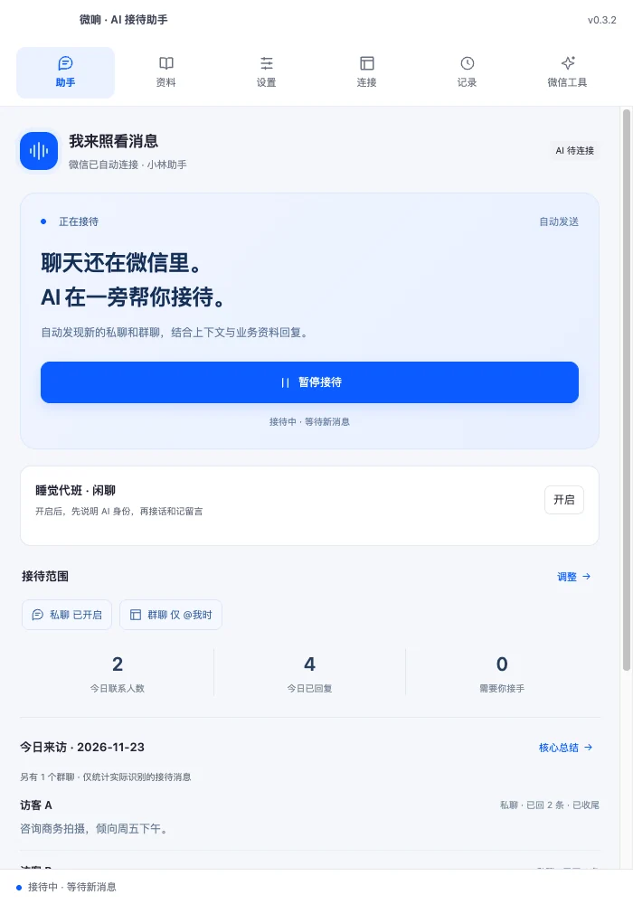

macOS · 微信接待助手
微响配合电脑微信工作。忙的时候接住新消息，回来后按联系人查看聊了什么、接下来要做什么。

为助手取名，设置口吻，添加业务介绍、资料和常见问答。选择先看草稿，或开启自动回复。
私聊开启后处理新消息。群聊只在明确 @ 你时回复。你操作微信时，自动回复会暂停。
按联系人查看对话重点、明确需求和待办，方便你直接接手。
使用 AI 功能需填写自己的 API 密钥，AI 用量由你的服务商账户计费。微响由 MIKA LIFE COMPANY LIMITED 提供。